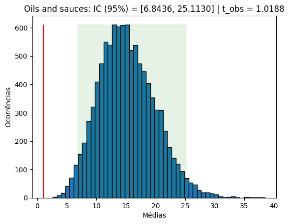
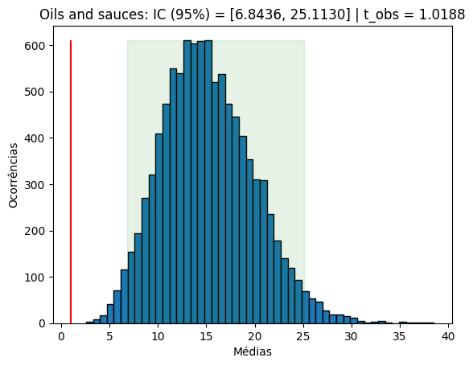

Sumário
- Introdução
- Motivação
- Dados Utilizados
- Perguntas
- Análise Exploratória dos Dados
- Teste de Hipótese
- Modelos de Regressão
Introdução
Neste trabalho, iremos analisar como a composição de macronutrientes de um determinado alimento impacta nos seus respectivos índice glicêmico (GI) e carga glicêmica (GL).
Motivação
Explicando brevemente, como consta na fonte de nossa base de dados:
“O Índice Glicêmico (GI) é uma medida da rapidez com que um determinado alimento pode aumentar os seus níveis de açúcar no sangue. [...] O GI de um alimento é determinado medindo a área incremental sob a curva do nível de açúcar no sangue em duas horas (AUC) após um período de 12 horas de jejum e ingestão do alimento que tem uma certa quantidade de carboidratos disponíveis (geralmente 50 g). A AUC do alimento testado é dividida pela AUC do padrão (glicose ou pão branco, com duas definições distintas) e multiplicada por 100. O valor médio do GI é determinado a partir dos dados obtidos de 10 participantes humanos. [...]
O Índice Glicêmico é uma medida importante da rapidez com que determinados alimentos podem afetar os níveis de açúcar no sangue. Conhecer e compreender os valores do GI dos diferentes alimentos pode ajudá-lo a fazer escolhas alimentares informadas para ajudar a manter níveis saudáveis de açúcar no sangue.”
A partir daí, é introduzida a carga glicêmica (GL):
“O GI é uma medida da rapidez com que um determinado alimento é convertido em glicose, e é expresso numa escala de 1 a 100 (sendo 100 a conversão mais rápida). O GL vai mais longe, tendo em conta não só a velocidade de conversão da glicose, mas também a quantidade de carboidratos contidos num determinado alimento. Para calcular o GL, é utilizada a seguinte fórmula: GL = (GI x quantidade de carboidratos disponíveis por porção) dividido por 100.”
Portanto, em nosso trabalho, iremos focar em pesquisar se é possível descobrir o GI e, consequentemente, o GL de um alimento apenas pela quantidade de carboidratos, proteínas e gorduras informados em sua tabela nutricional. Caso possível, tal procedimento seria de grande ajuda a pacientes diabéticos, que precisam manter controle assíduo dos seus níveis de glicose no sangue e por conseguinte da sua alimentação.
Dados Utilizados
Utilizamos os dados presentes no site Glycemic Index Guide. Estas são as principais features:
- nome do alimento
- categoria
- calorias
- carboidratos
- proteínas
- gorduras
- GI
- GL
Perguntas
- Quais são os alimentos menos recomendáveis para diabéticos? E os mais? O que eles têm em comum? Um modelo preditivo consegue identificá-los de maneira eficaz e evitar uns e priorizar outros?
- É possível gerar recomendações de dieta para diabéticos por meio de machine learning que sejam personalizadas, se adequando a seus hábitos e preferências?
- O que faz do nutricionista um profissional não substituível por uma inteligência artificial? Quais são as principais limitações de um modelo preditivo para essa finalidade?
Análise Exploratória dos Dados
De acordo com a própria fonte, Foods with the highest GI are generally composed of sugars
and simple carbohydrates, which can
cause spikes in blood sugar
levels.
Em tese, cada grama de carboidrato corresponde a 4 kcal. Podemos observar que a base de dados não
corresponde a essa conta, o que nos leva a desconfiar do número de calorias. Portanto, foi criada uma
feature “real_calories” que calcula as calorias do alimento multiplicando:
- Gramas de carboidratos e proteínas por 4
- Gramas de gorduras por 9
“carbs_kcal_perc”, que pega a porcentagem de calorias do
alimento que são provenientes de carboidratos. Depois, foi adicionada a feature “low_gl”, binária
que simplesmente calcula se o GL do alimento é menor ou igual a 10 ou não.
Adicionando um pequeno desvio na última, esta visualização é gerada:

Com isso, é possível perceber que alimentos com alta % de calorias provenientes de carboidratos têm uma tendência maior a serem altos em GL! Esse é um ótimo indício de alimentos a serem evitados por diabéticos.
Existem vários alimentos com GL = 0. Todos esses alimentos são alimentos com baixíssima quantidade de
carboidratos por 100g (o que mais contém, tem 7g). Isso faz muito sentido considerando que o GL é calculado
pelo GI * carbs / 100. Entretanto, como nem todos tem o carboidrato zerado, isso também é um
ótimo indicativo
que uma baixa quantidade de carboidratos significa um baixo GI.
Ao se gerar o gráfico comparativo, incluindo uma regressão linear, percebe-se que a correlação dos dados é positiva, mas não muito forte.
Interessantemente, olhando-se a média do GL por categoria, percebe-se que os maiores GLs são de categorias costumeiramente constituídas principalmente por carboidratos (vermelho) ou gorduras (amarelo):
| Categoria | GL Médio |
|---|---|
| Baked products | 31.99 |
| Beverages | 4.53 |
| Dairy | 3.7 |
| Fast foods | 30.56 |
| Fruits | 10.38 |
| Grains | 28.61 |
| Greens | 7.64 |
| Meat | 0.84 |
| Mushrooms | 1.35 |
| Nuts | 7.5 |
| Oils and sauces | 1.02 |
| Seafood | 0.7 |
| Soups | 2.9 |
| Spices | 5.07 |
| Sweets | 38.51 |
| Vegetables | 3.5 |
| Other | 18.59 |
Teste de Hipótese
Categorias onde os alimentos são majoritariamente compostos de carboidratos e gorduras tendem a ter GL mais alto. Para testar a hipótese, podemos fazer um teste de permutação: embaralhamos as categorias dos alimentos, calculamos as médias e vemos se os valores que encontramos originalmente podem ser explicados pelo acaso ou se são de fato raros de se acontecer, implicando que nossa tese tem validade.
- Hipótese nula: (H0): As GLs médias das categorias que observamos pode ocorrer ao acaso
- Hipótese alternativa (HA): Alimentos com maior fração de carboidratos em sua composição têm maior GL, na média.


 



Executamos diversos intervalos de confiança, e podemos notar que, na maioria deles, os valores observados estão fora do intervalo de confiança, o que nos permite rejeitar a hipótese nula de que os valores que observamos são explicados pelo acaso. Isso nos dá mais confiança de que nossa hipótese alternativa está correta, e que alimentos onde a maior parte das calorias vem de carboidratos e gorduras têm GL maior, sendo assim alimentos que devem ser evitados por pessoas com diabetes.
- Os casos em que os valores estão dentro do IC podem ser facilmente explicados pelo número de elementos: categorias como Sopas, Frutos do mar e Cogumelos são muito pequenas (5, 5 e 2 alimentos, respectivamente). Isso aumenta a variabilidade das médias, alargando os Intervalos de Confiança para cobrir uma faixa de valores maior.
Modelos de Regressão
Além das análises exploratórias que fizemos dos dados, o nosso teste de hipótese nos confirmou que de fato há uma correlação entre a composição em macronutrientes do alimento (em especial carboidratos e gorduras) e o GL dele. Com base nesses indícios, podemos treinar um modelo de regressão para prever o valor do GL de um alimento a partir de suas informações nutricionais.
Inicialmente, tentamos duas abordagens: uma regressão múltipla com regularização L2 e uma regressão baseada em vizinhos mais próximos. Utilizamos também a validação cruzada para evitar um overfitting dos nossos dados, na busca de encontrar um modelo que generalize melhor. Abaixo estão os resultados que encontramos, utilizando a biblioteca SciKit Learn.
COLOCAR UM GRÁFICO AQUI
COLOCAR OUTRO GRÁFICO AQUI
Olhando para o valor do R2 de cada um dos modelos, avaliado nos dados de teste, vemos que a regressão múltipla se saiu melhor que o KNN, e por isso escolhemos esse modelo para prosseguir.
Para desenvolvermos nosso modelo final, utilizamos a biblioteca statsmodels, pois ela nos apresenta resultados mais detalhados, que facilitam a criação de um modelo mais polido.
O relatório de regressão acima, gerado com a biblioteca statsmodels, mostra os intervalos de confiança para os coeficientes da nossa regressão. Os intervalos que contém o valor 0 correspondem a variáveis que podem possivelmente ser eliminadas do nosso modelo, para reduzir a variância e encontrar um modelo que generalize melhor.